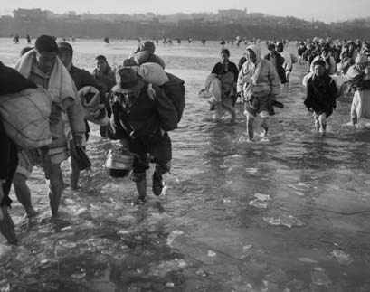
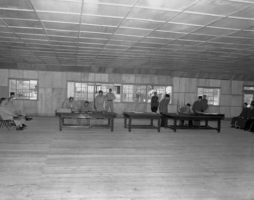
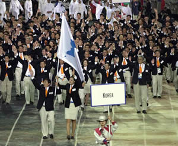

샘플 한국어 텍스트를 (The Korean War: A Still Present Past)
I. 역사 - 전쟁이 한반도를 찾아오다
한반도는 이천년 동안 단일한 언어와 문화, 역사를 공유해 온 단일 민족의 고향이다. 이천년의 긴 역사 동안 몇차례 왕조를 교체해 온 한반도는 1910년 일본의 식민지가 되며, 이후 35년 동안 정치적 억압, 경제적 착취, 그리고 문화적 동화를 강요당한다. 일본은 모국어의 사용을 금지시키고 일어 사용을 강요했으며, 전통적인 종교 대신 일본 천황의 숭배를 강제했고, 심지어는 이름까지 일본식으로 개명하 도록 강요했다. 일본은 또한 강제납치와 징용을 통해 많 은 한인들을 일본과 아시아 내 다른 식민지로 보내서 그들 을 강제노역에 동원하고 '정신대'라는 이름의 성적노예로 부렸다. 그 결과 많은 한인들이 궁핍과 억압을 피해 중 국, 러시아, 일본, 나아가 멕시코와 미국 등지로 떠났다.
일제 식민 기간 동안 독립운동가들은 상해에 임시정부를 세웠고, 세계 각지로 흩어진 한인들도 직간접으로 독립운 동에 참여했다. 일본의 패망을 내다본 한인들은 1945년 한반도 전역 에 해방과 자치를 대비한 인민위원 회를 수립하기 시작했다. 일본이 제이차 세계대전에서 패한 1945년월 마침내 해방을 맞은 한반도의 민 중은 같은 해 9월 조선인민공화국, 즉 인공을 수립했다. 그러나 이런 한민족의 노력은 남과 북으로 한반 도를 갈라 들어온 미국과 소련에 의 해 좌절된다. 미국은 인공이 공산 주의적이라고 보고 지방인민위원회 의 인정을 거부한 채, 스스로를
1948년 미국은 유엔의 형식적 승인하에 남쪽만의 분리 대 통령 선거를 강행했다. 이는 북의 항의와, 단독선거가 민 족분단을 고착화시킬 것을 내다본 남쪽 민족주의자들의 반 대를 무릅쓴 결정이었다. 항의시위는 친공으로 낙인찍혀 졌고, 같은 해 오늘날 '4.3 학살'이라 불리는 극단적인 폭 력적 진압이 제주도에서 자행되었다. 이런 폭압적 상황에 서 선거가 치러져 이승만이 대통령으로 당선되었으며 8월 15일 대한민국이 성립되었다. 9월 9일에는 북에서도 김일 성을 지도자로 내세워 조선민주주의인민공화국을 수립하는것으로 대응했다. 한국전쟁의 무대는 이렇게 냉전으로 대치 중인 두 초강대세력이 지원하는, 이념적으로 적대적인 두 국가 사이에 마련된 것이다.
한국전쟁의 기원에 대한 해석은 두 진영 사이에 크게 엇갈 린다. 남한과 미국은, 전쟁발발 50주년 기념행사를 맞이 하여 미국방부에서 발표한 것처럼, "북한이 이른 새벽 구만 에서 십만에 이르는 병력으로 집중포화를 퍼부은" 1950년 6월 25일의 기습공격으로 시작되었다고 주장한다. 그러나 북한과 중국은 소위 "기습공격"은 남측이 북을 침범한 데 대한 대응이었다고 주장한다. 진정한 평화가 정착될 때까 지는 아무도 왜 하필 그날 전면전이 벌어지기 시작했는지 정확한 이유를 알 수 없을 것이다. 그러나 38선 부근에 살 던 민간인들은 38선상에서의 작은 충돌은 1948년 경까지 거슬러 올라간다고 기억한다. 개성이 고향인 전순태씨의 회고에 따르면,
"개성은 전쟁 전 38선 바로 아래 있었어요. 거기서 북으로 조금만 가면 북한 영토였고 북한군 진지가 있었어요. 조금 만 남쪽으로 가면 남한군 진지가 나왔고. 그리고 서로 꽤 자주 상대방에게 총격을 가했어요. 또 전쟁 발발 바로 전 인 '48년과 '49년에는 큰 전투도 꽤 있었지요. 사나흘이 멀다 하고 기계총과 박격포 소리가 들렸어요. 직접 보기 도 많이 했어요. 전쟁이 늘 있었어요. 전쟁 전 이미 포로 들도 보았고, 사람들이 죽기도 많이 죽었어요. 군인들도 많이 죽었고" (발췌 들어).
한국전쟁은 공중전이자 유격전이었으며 핵전쟁이 될 뻔한 전쟁이다. 미국은 엄청난 폭격을 퍼부어 남북의 수많은 마 을과 도시들을 쑥대밭으로 만들었으니, 이런 피해는 한반도 의 북쪽에만 국한되지 않았다. 이 전쟁에서 제2차 세계대 전 중 유럽대륙에서 사용된 것보다 더 많은 양의 폭탄이 사 용되었고, 후에 베트남 전쟁 중에 사용된 것보다 더 많은 양의 네이팜탄이 사용되었다. 지상에서는 남북이 모두 상 대방을 지지한다는 혐의가 있는 민간인들을 체포해 죽이는 것을 당연하게 여겼다. 대량학살의 규모가 너무 엄청나서 유럽의 기자들은 모든 건물이 부서진 돌더미로 변하고 도망 가지 못한 주민들은 단순한 사상자로 변한 도시의 한복판을 걸어갔노라고 썼다 ("난민 트레킹").
미국의 군부는 전쟁 발발 몇주만에 이미 핵무기의 사용을 심각히 고려했다. 미국은 핵포격의 가능성을 시험하기 위 해 1951년 한반도의 북쪽에 강력한 TNT 폭탄을 투하하기 까지 했다. 화학무기의 사용도 고려했으나 네이팜탄의 효 과면 충분하다고 판단해 폐기했다. 북조선은 유엔군이 생 물학무기도 사용했다고 주장한다. 전쟁 3년 동안 사망자수 는 북측전투원 오십만명, 북측 민간인 이백만명, 남측 전투 원 십칠만 오천명, 남측 민간인 백만명, 중국 의용군 백만, 미군 삼만육천구백사십명, 그리고 다른 나라의 유엔 참전군 삼천명으로 추정된다 ("움직이는 것은 무엇이든 쏴라").
전쟁은 한반도의 민중에게 심각한 사회적 결과를 가져다 주 었다. 첫째, 이 전쟁으로 인해 엄청난 숫자의 민간인 사상 자 외에도, 많은 수의 실향민, 고아, 이산가족이 발생했다. 전선의 이동에 따라 피난민도 이동했다. 피난민들은 걸어 서, 배로, 기차로, 때로는 남으로, 때로는 북으로 도망갔다. 기차는 여객으로 넘쳐서 지붕에 앉은 사람이람이 부지기수였고, 졸거나 꼭 묶어매지 않은 사람들은 떨 어져 죽기도 했다. 미국의 피난선은 자리가 없어 수천의 사람들을 돌려 세웠다 ("등산 기차"). 북의 난민들은 대개 부유한 지주, 종교적, 정치적 탄압을 피하려는 사람들, 그리고 미군의 대 규모 폭격을 피해 도망치려던 수 많은 사람들이었다. 김원 엽씨의 증언에 따르면,
"많은 사람들이 북에서 남으로 내려왔습니다. 정치적인 견 해도 물론 당연히 달랐을 거라고 생각합니다. 그렇지만 북 에서는 종교를 지킬 수가 없었기 때문에 종교의 자유를 찾 아 남으로 온 사람들도 많습니다. 이 사람들은 살고자 하 는 아주 강한 의지를 가지고 있었고, 그런 의지가 없었더라 면 살아남기 힘들었을 거라고 생각해요. 종교의 힘 또한 컸지요."
전쟁 발발 삼개월 만에 오만 칠천의 남한 사람들이 실종된 것으로 기록되었고, 오십만 이상의 가정이 파괴되거나 손상 되었다. 어린이들의 경우는 피해가 가장 큰 집단에 속한다 . 1954년 한 국제 어린이 복지단체는 18세 이하의 어린 이 이백만명이 집을 떠나야 했던 것으로 추정했다. 종전후 어린이를 포함한 수십만의 한인들이 38선의 반대 편에 가 족이나 친척을 둔 것으로 추정된다. 이들은 1980년대까 지는 서로를 만나 볼 희망조차 가질 수 없었고, 50년 이상 이 지난 오늘날까지도 재결합의 가능성은 아주 희박하다. 이런 상황은 아주 흔해서, 거의 모든 한인 가족들이 크고 작게 이산의 영향을 받고 있다 ("가족상봉").
둘째, 남과 북 양측이 전쟁 동안 서로 상대방에 대해, 특히 민간인을 상대로 학살을 자행했기 때문에 남과 북 사이의 이념적 분단은 전쟁을 거치면서 더욱 뿌리깊은 증오감으로 변했다 ("어머니께서 제게 말씀하시곤 했어요"). 중립적이거나 타협적인 입장을 견지하는 것은 불 가능해졌다. 전후 몇십년 동안 남과 북이 모두 이념교육을 대폭 강화해, 남쪽에서는 반공주의를, 북쪽에서는 반자 본주의를 심화시켰다. 가령 1960년대와 70년대의 남한에서는 김일성을 때려잡자는 노래를 학생들을 상대로가르쳤고, 북조선에서는 남한 사람 들은 모두 미국의 노예가 되어 가난하게 살고 있다고 가르쳤다. 북의탈출자들이 남한 사회의 근대적 활 기를 보고 놀라는 것이나, 많은 남 한 사람들과 심지어 남한으로부터 이민온 재미동포들까지 아직껏 뿌 리깊은 반공주의를 간직하고 있는 것은 놀라운 일이 아니다. 윤 테드씨는 말한다 (김호수, "6.25: 우리 안에 흐르는 역사").
"사람들은 자신들에게 무슨 일이 닥칠지 몰라 전전긍긍했습 니다. 유명한 집안 사람이라면 공산주의자들이 내려와 납 치해다가 강제노동을 시키거나 무슨 곤경을 줄지 몰랐습니 다. 실제로 그렇게 했어요. 친척 중 많은 분들이 납북되었 어요. 특히 서양 교육을 받은 분들이요."
세째, 한국전쟁은 남한과 미국 사이에 존재하던 특별한 군 사적 동맹관계를 더욱 강화시켰다. 그리고 이러한 관계는 그 나름의 일련의 사회, 경제적 결과를 초래했다. 그 중 가 장 일차적인 것 중의 하나는 남한의 미국에 대한군사적, 경제적 의존성이다. 이런 종속적 관계의 결과 중 눈에 띄는 것은 각 미군기지 주변 소위 기지촌에 체계적인 군사매춘이 형성된 것이다. 1960년대와 70년대 미군의 요청과 남한 정부의 협조에 따라 자리잡은 이 체제는 오늘 날까지도 계속되고 있다. 매춘은 남한에서 불법이지만, ' 특수향락지구'로 분류된 기지촌에서는 합법이다. 특별히 미군고객만을 상대로 만들어진 클럽에서 호스테스들은 창 녀로 일한다. 한국정부는 1970년대에 이 매춘여성들이 외 환을 획득하고, 남한에 주둔하는 미군의 사기를 진작시킨다 며 그들을 애국자라고 칭찬했다 (조 그레이스, "6.25: 우리 안에 흐르는 역사"). 이런 문제들은 최근에 와 서야 사회문제로 주목받기 시작했다.
이보다 덜 가시적이지만 더 보편적인 결과는 미군, 미제 물 건, 텔레비전 프로그램, 그리고 다른 미디어와 한국 민간인 들 사이의 접촉을 통한 미국 문화의 전파이다. 예를 들어, 미국공보원은 한국에 아홉 군데의 지부를 두고 도서관과 다 른 이동식 창구를 통해 한국사람들에게 책과 잡지, 신문과 영화를 전파한다. 미군이나 미국인 선교사, 그리고 다른 미국인들을 접할 기회가 있는 한국인들은 시어스의 캐털로 그를 보고 '미국, 풍요의 나라'를 꿈꾸며, 더러는 미제 물건 을 주문하기도 한다. 한국학 연구의 권위자인 부르스 커밍 스 교수에 따르면, 한국인들의 미국화가 미공보원의 목적이 었으며, 그 목적의 달성에 성공해 수백만의 한국인들이 미 국을 꿈의 땅으로 생각한다. 남한은 한국인들 스스로 '미 국병'이라 명명한 질환, 즉 미국에 가고자 하는 욕망의 병 에 걸린 것이다. 입양인들을 빼고도, 팔십만 이상의 한인 들이 미국으로 이민을 왔다 ("당신의 아이에").
한국전쟁은 아직 끝나지 않은 전쟁이다. 전투는 1953년 7월 27일 북조선과 미국, 그리고 중국 사이 휴전협정의 조 인과 함께 종식되었다. 북조선과 중국은 '미제국주의자'를 구축했다고 선전했으며, 미국은 '공산침략자들'의 '저지'를 자축했다. 휴전은 한반도의 분단을 고착화시켰으며, 위도 38도선 부근을 따라 세계에서 가장 위험한 군사경계선, 즉 비무장지대를 탄생시켰다. 그로부터 반세기 이상이 지났음 에도 여전히 평화조약이 체결되지 않은 채, 미군과 남한군 은 휴전선을 경계로 북조선군과 일촉즉발의 상태로 대치하 고 있다.
휴전협정이 조인된 날은 남한에서 축하행사 없이 지나갔으 며, 한인들은 대부분 그날에 대해 뚜렷이 기억하지 못하고 있다. 남한은 군사 통제권을 유엔 사령관인 맥아더 장군에 게 넘긴 상태로서 휴전협정 조인 당사자가 아니었다. 그럼 에도 이승만 대통령은 휴전에 강하게 반대하면서 휴전을 보 이콧했고, 학생들을 동원해 항의시위를 조직했다. 박기춘 씨는 다음과 같이 회상한다.
"칠월에 조약을 맺었는데, 아주 더운 날이었어요. 우리 학 교 학생들은 모두, 어디더라, 주한미대사관 앞에 갔어요. 그냥 그 앞에 앉아서 울어야 했지요. 왜 그랬는지 몰라. 내 생각엔 이승만 대통령이 그러라고 해서, 그러니까 우리 학 교에 지시를 내려서였던 것 같아, 아마도 공산주의자들한테 반대하느라고… 이대통령은 우리 나라의 분단을 받아들이 고 싶어하지 않았어요. 우리는 우리 나라를 도로 찾고 싶 었어요. 통일을 원했지요."
남쪽에서는 이후 40여년 동안 일련의 군사독재정부가 들 어서서 미국의 지지 속에, 1980년대 들어 세계를 깜짝 놀 라게 한 경제개발계획을 추진시켜나갔다. 오랫동안 야당 지도자였던 김대중이 1997년 대통령으로 당선되었는데, 그럼으로써 군장성출신과 직접적으로 연계되지 않은 최초 의 남한 대통령이 되었다. 김대중 대통령에 이어 2002년 당선된 노무현 대통령은 인권변호사 출신이자 김대중 대통 령의 동지이다. 많은 남한 사람들에게 김대통령의 당선은 남한 민주주의 성숙의 단초를 의미한다.
북에서는 김일성이 수반이 되어 사회주의와 지도자에 대한 영웅숭배를 결합시킨 독특한 형태의 공산주의국가를 수립 했다. 북의 공식지도이념인 주체사상은 미국과 미국의 우 방의 위협 뿐 아니라 소련과 중국의 영향에서도 독립된 나 라를 수립하는 기초로서 자립의 정신을 강조한다. 카터가 미국의 대통령으로 당선된 이래 북조선은 한반도에서 화해 와 통일의 계기를 마련하기 위한 방편으로 미국과 남한을 포함한 삼자회담을 제안했으나 성사되지 않았다. 북조선은 이십년 이상 지속적인 경제성장을 이루었으나 1990년대 들어 교역상대국의 상실, 전대미문의 가뭄과 기근, 그리고 지속적인 경제적 고립의 결과 곤란을 겪기 시작했다. 북의 경제는 1990년대 중반에 이르러 극도로 피폐해졌고, 주민 들은 굶주리게 되었다. 또한 김일성이 1995년 사망하고 난 뒤 그의 아들인 김정일이 지도자가 되었으니, 이는 전근 대적인 왕위계승과 마찬가지라 하여 다른 나라의 비판을 받 고 있다.

김대중 대통령의 당선 이후 남한은 북한을 직접 상대하는 " 햇볕정책"을 채택하기 시작했으며, 이 정책은 노무현 정부 에 의해 계승되었다. 2000년 6월 15일 김대중과 김정일 이 평양에서 사상 초유의 정상회담을 가졌으며 공동성명을 발표했다. 이 공동성명은 한인들이 자주적으로 통일을 성 취할 수 있다는 자신감을 표현하고 있으며, 서로의 화해방 안에 공통점이 있음을 인정하고, 경제적 협력과 민간교류의 촉진을 선언하고 있다. 그 이래 남과 북 사이에 경제 문화 협력이 급속히 증가해왔다. 이제 남한은 북조선의 가장 큰 교역 파트너이며, 북에 대해 강경입장을 견지하는 미국의 압력에도 불구하고 북과의 대화정책을 고수하고 있다.
그럼에도 통일의 전망은 아직 밝지 않다. 남과 북은 난마처 럼 얽힌 상대방과의 관계를 풀어나가야 하고 주변강대국인 일본과 중국, 그리고 미국을 포함한, 우방과 적국 사이의 어 려운 관계도 헤쳐나가야 한다. 이런 맥락에서 2000년의 공동성명은 지속적인 남북협력을 위한 기본원칙으로 남아있 다.
II. 전쟁, 이민, 그리고 재미동포
한국전쟁은 발발 직후부터 두 종류의 이민자를 생산해냈으 니, 미군의 신부와 국제 입양인이 그들이다. 1950년과 1989년 사이에 거의 십만에 달하는 소위 '국제결혼'을 한 여성과 '군인의 신부'가 미국으로 왔으며, 매년 약 천명으로 추산되는 군인의 아내가 계속 미국으로 이민을 오고 있다. 또한 약 십오만에 달하는 한국계 입양인들이 1953년 이래 미국으로 들어왔다. 입양인들은 처음에는 미군을 아버지로 하는 아기들이거나 전쟁고아들이었다. 그러나 이들은 점차 생존에 위협을 받던 가족이나 미혼모들의 자식들로 대치되 었다. 국제적 입양을 줄이려는 한국 정부의 노력에도 불구 하고, 2002년과 2003년 사이 최근의 자료에 따르면 해마 다 이천명 이상의 한국 아이들이 입양인으로 해외에 송출되 었고, 그 주요 대상국은 미국이다 ("당신의 아이에").
이 두 종류의 이민자들은 모두 아시아로부터 미국으로의 이 민이 전적으로 금지되었거나 극단적으로 제한되었던 시기에 이민을 왔다. 그들은 미국 시민의 아내나 입양자녀로서 할 당외 이민자로 받아들여졌다. 아주 작은 수의 예외를 제하 면, 이들이 1924년과 이민법이 자유화된 1965년 사이에 영주권자로 입국이 허용된 유일한 한인들이었다.
군인의 아내들과 입양인들은 미국 가정으로 흡수되었으며, 미국 전역에 뿔뿔이 흩어져서 많은 경우 아시아인이 거의 살지 않는 교외나 전원에 살게 되었다. 군인의 아내들은 보 통 다른 한인 이민지역과는 분리된 채 군부대 부근에 살면 서 자신들끼리의 조직과 친우관계를 형성했다. 미군의 아 내라는 그들의 처지는 많은 여성들에게 특별한 곤경을 가져 다 주었다. 최경숙씨에 따르면,
"백인과 결혼을 하긴 했지만 백인들과 편하게 잘 사귀지 못 합니다. 백인들도 나와 사귀려고 안 하는 편이에요. 어떤 때는 미국인이 아닌 한국사람과 결혼을 했더라면 좋았을 텐 데 하고 생각해요. 난 지금까지도 한국사람들과 잘 사귀지 못해요. 미국사람들과도 사귀지 못하고. 어느 쪽하고도 어 울리지 못하는 것이지요. 백인들과 결혼한 다른 친구들도 대부분 꼭 같은 느낌을 가지고 있어요. 우리는 가족들한테 도 배척당한다고 느껴요. 남편의 가족 말예요."
한국에서 온 입양인들은 대부분 미국 백인 가족의 일원이 되었다. 많은 이들이 이제 성인이 되었고 최근 들어 자신들 의 경험에 대해 발언하기 시작했으며 자신들의 존재를 공적 으로 드러내기 시작했다. 입양인들은 국가적, 국제적 협회 들을 조직하고 회의를 개최하며 시와 수필, 단편 등을 발표 했다. 군인의 아내들이 그랬던 것처럼, 많은 입양인들도 재 미동포 사회 중심부와 의미있는 연결을 맺으려고 노력하는 한편, 더 넓은 국제 한인 사회의 일원으로서 자신의 입지를 확보하기 시작했다. 한국 국제입양인들의 숫
자는 1970년대와 80년대를 정점으로 해서 한국정부가 국 제적인 비판에 대응 해외입양 절차를 이전보다 더 까다롭게 함에 따라 한때 감소추세로 돌아섰다. 그러나 1997년 경 기침체 이래 국제 입양인 숫자는 다시 증가했다.
1965년 이후 이민자들은 로스앤젤레스, 뉴욕, 샌프란시스 코, 시카고 등의 대도시와 미 전역의 다른 작은 고장에 한 인 이민지역을 탄생시켰다. 이런 한인 지역의 사람들 또한 이산가족과 한국전쟁의 상처치유 등 한반도의 한인들을 감 정의 소용돌이에 몰아넣은 것과 똑같은 이슈들을 가지고 있 다. 남한의 사람들이 남과 북에서 이산된 가족들 사이의 상봉을 텔레비전 중계로 지켜보는 동안, 몇몇 재미동포들은 북조선 지역에 살고 있는 가족들을 조용히 방문했다. 이들 의 북조선 여행이 합법적임에도 불구하고 그들은 다른 재미 동포들로부터 비난을 받을까 두려워하고 있다. 과거는 여 전히 현재의 문제로 남아 있다. 다만 드러내 놓고 논의되 거나 이름 붙여지지 않았을 따름이다 ("유산").
다른 한편 한국전쟁은 해마다 전우애를 새삼스럽게 다짐하 는 한미의 노병들을 앞세운 형태로 공적으로 기념되었다. 이런 연중행사는 또한 미국내 한국의 존재와 남한내 미군의 존재를 긍정하는 기능도 부분적으로 담당했다. 그러나 많 은 평범한 재미동포의 경우 생계를 유지하고 가족을 부양하 며 낯설고 때로 적대적이기까지 한 새로운 사회에 적응하느 라 현재건 과거건 정치에 신경을 쓸 겨를은 거의 없었다고 해도 과언이 아니다.
그러나 미국의 꿈은 멀기만 했다. 이민자 대부분이 장사를 하며 미국에서 태어난 자녀를 전문직업인으로 성공시켰다 는 상투적 이미지와는 달리 대부분의 이민자는 공장노동자 나 서기, 청소부 등 사회적 지위가 낮은 직종에 종사하고 있다. 많은 가족들이 빈곤선 바로 근처에서 허덕이고 있다 . 가령 2000년의 인구통계에 따르면, 시카고에 사는 한인 의 30퍼센트가 빈곤선 이하의 생활을 하고 있는 것으로 나 타났다. 의사나 변호사, 회계사 등의 전문직 종사자들도 대체적으로 한인 지역사회 내에서 저소득층이나 이민자 고 객을 상대로 영업을 하고 있다. 도시빈민지역을 경제적으 로 방치한 산물인 1992년의 LA 폭동은 미주 한인들의 생 계수단을 문자 그대로 잿더미로 만들었다. 이 사건은 많은 이들에게 한국전쟁의 기억을 새삼 일깨워 준 사건이기도 하다 ("조화와 혼돈," "우리의 우주").
전쟁은 잊혀진 것이 아니라 표면 바로 밑에 있으면서, 이 유산의 이해를 돕기 위한 교육을 받지 못한 미국 태생의 세 대에게 말없이 억압적인 그림자를 드리우고 있다. 이 침묵 된 과거는 종종 가족관계를 왜곡시켜, 부모와 자식간의 세 대차와 문화적 격차의 골을 더 깊게 한다. 유사하게 북조 선 또한 이민자들의 침묵과 비판적인 코멘트에 의해 위험 한 존재로 낙인 찍힌 채 "부재하는 존재"로 남아 있다. 한 인 2세들의 일부는 이 침묵을 묵묵히 받아들이되 종종 어 른들의 행동에 의문을 품어 왔다. 그들은 그 의문을 풀기 위해 식민지시대의 어린시절, 전쟁동안의 피난, 폭격, 죽음 , 군복무, 좌익의 저항, 국가의 억압, 기지촌, 실종된 친척 들, 실종된 조부모들, 북한에 남겨진 가족 등 여러 단편을 모아 가족사를 재구성하기 시작했다. 문오성씨는 말한다.
"제 삶은 제 주위 많은 다른 아이들의 삶과 아주 비슷한 것 처럼 보였어요. 그러나 언제나 어떤 긴장감과 불안감이 상 서롭지 못한 바람처럼 우리 가족의 내부를 관통해 불고 있 다는 느낌이 있었어요. 그리고 많은 침묵들이 있었지요… 처음 이런 이야기들을 들었을 때 많은 의문이 풀렸어요… 그리고 무거운 짐이 벗겨진 듯한 느낌이었지요" ("침묵들").
다른 더 젊은 소위 코리안 아메리칸들에게 한국사와 한국 전쟁은 자신들의 일상사와는 아주 거리가 먼 곳에 존재한 다. 그러나 전쟁을 겪고 살아 남은 어른의 이야기를 우연 히 엿듣는 것만으로도 더 알고자 하는 호기심이 유발된다. 한 대학생이 "어제 안에 오늘" 전시회의 계기가 된 구술사 를 듣고 다음과 같이 말했듯이.
"처음 이런 이야기들을 들었을 때 아주 엄청난 충격을 받았 어요. 너무 엄청나서 거의 아무 것도 느낄 수가 없었고, 이해도 되지 않았어요…. 그로 인해 내 가족을 다른 눈으 로 보게 되었어요… 동시에 화도 났고. 왜 내게 말해주지 않았을까, 왜 난 물어보지 않았을까…. 할아버지가 한국전 쟁 중에 돌아가셨다는 걸 최근에 알게 되었어요. 할머니 가 얼마나 고통을 받으셨을까 하는 생각을 해요… 시간을 되돌려 할머니께 궁금한 걸 모두 여쭤볼 수 있다면 얼마나 좋을까. 늦기 전에 여쭤 보았더라면 얼마나 좋았을까" ("우리들의 조각그림 맞추기").
남과 북을 막론하고 모든 한반도의 사람들이 화해를 향해 노력하고 있는 이때 재미한인들 또한 과거를 이해하려는 어려운 과업에 착수하는 것은 시기적절한 일이다. 전쟁과 분단은 한반도에 살고 있는 한인들 뿐 아니라 모든 세대의 재미한인들에게도 깊은 상흔을 남겼다. 아직도 지속되고 있는 과거의 존재를 인정하고, 그것에 목소리를 부여하는 과업이 기다리고 있는 것은 이곳 미국 땅에서도 마찬가지 다. 이 과거는 재미동포들이 다른 이들과 목소리를 합쳐 화해를 구하고, 지속되고 있는 정치적 갈등의 평화적 해결 을 주장하라고 요구하고 있는 것이다. 미래는 우리가 과거 를 어떻게 하느냐에 달려있다 ("귀환의 다리").
Footnotes:
1. See chapter one of Bruce Cumings' North Korea: Another Country (New York: New Press, 2003) for a detailed discussion of the damage sustained by Korea in the Korean War. The use of napalm is discussed on pages 16 and 17.
List of photographs (in order of appearance):
1. 대동강의 살얼음판을 건너서 평양을 떠나 피난가는 사람 들
촬영: 1950년 12월 10일 Bettmann Collection/CORBIS
2. 해리슨이 3년간의 한국전을 끝내는 정전협정에 서명하 고 있다. 미대표 해리슨이 테이블의 왼쪽에, 북한대표 남일이 오른쪽에 앉아있다.
촬영자: F. Kazukaitis. 촬영: 1953년 7월 23일
3. 2000년 시드니 올림픽 개회식에서 북한과 남한의 선수들이 함께 행진하는 사진입니다.